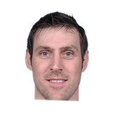
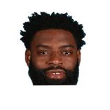

Andres Nocioni on Joakim Noah:
“He's like a tornado. He's nothing special, doesn't have any special talent. It's all strength and aggressiveness. What you can tell is he cares a lot about winning.”

4 quotes from Andres Nocioni about 4 other people around the NBA, newest first. Each one links to its original source.
Andres Nocioni on Joakim Noah:
“He's like a tornado. He's nothing special, doesn't have any special talent. It's all strength and aggressiveness. What you can tell is he cares a lot about winning.”
Andres Nocioni on Tyreke Evans:
“I can't really say what I want to say because I'm on TV... Incredible talent, but I think teams sometimes should be tougher on the younger guys. What he brought to Sacramento was trouble in the locker room and that doesn't take you nowhere.”
“I told him that I was not going to do it because I thought I could play. I also knew my body and, although it was not at one hundred percent, it could reach 80%.I also told him that playing at the World Championship would let me be ready to play the season in Philadelphia,”
What NBA players and coaches have said about Andres Nocioni →

Tyreke Evans1 quote“I told him that I was not going to do it because I thought I could play. I also knew my body and, although it was not at one hundred percent, it could reach 80%.I also told him that playing at the World Championship would let me be ready to play the season in Philadelphia,”
Andres Nocioni:
“I don't rule out anything: playing in the NBA, Europe, even keep playing with Caja Laboral.”
Andres Nocioni on Joakim Noah:
“He's like a tornado. He's nothing special, doesn't have any special talent. It's all strength and aggressiveness. What you can tell is he cares a lot about winning.”
Andres Nocioni on Tyreke Evans:
“I can't really say what I want to say because I'm on TV... Incredible talent, but I think teams sometimes should be tougher on the younger guys. What he brought to Sacramento was trouble in the locker room and that doesn't take you nowhere.”